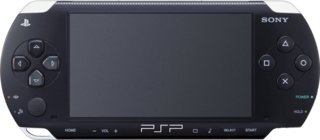
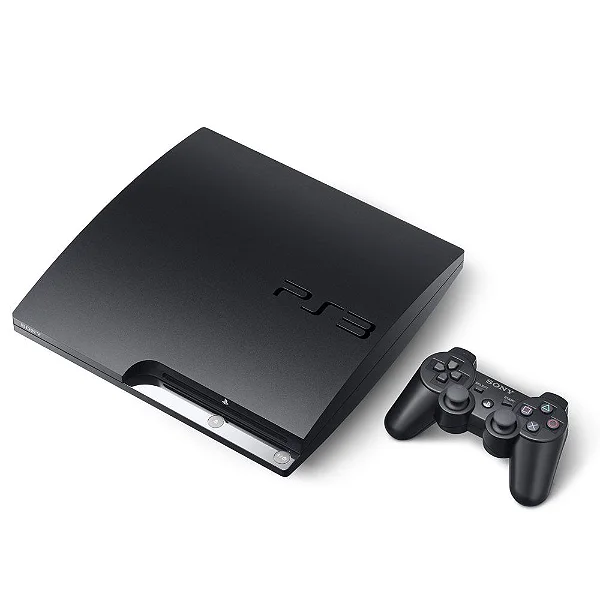
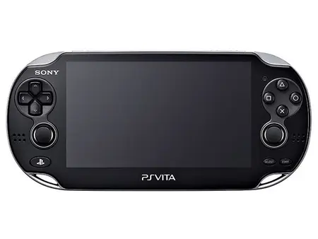
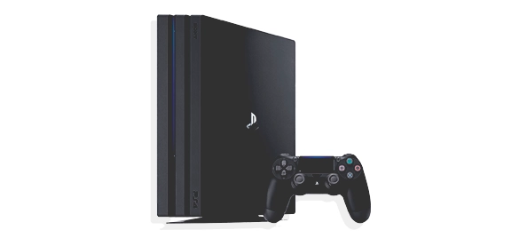

PlayStation 1 — dezembro de 1994
Originalmente lançado no Japão em dezembro de 1994, o PlayStation 1 foi a primeira grande aposta da Sony no mercado de games, entretenimento que era considerado como “brinquedo de criança” pelos executivos da empresa. O encabeçado do projeto, o engenheiro Ken Kutaragi, enfrentou muitos obstáculos para criar o console, mas conseguiu entregar o que havia prometido ao presidente da gigante japonesa na época, Norio Ohga.
No início dos anos 90, o mercado dava seus primeiros passos em direção à era 3D, e o PlayStation 1 ajudou a pavimentar o terreno para popularizar a tecnologia, já que rodava jogos em CD-ROM e possibilitava melhorias notáveis em aspectos gráficos e de sonoplastia. A versão Slim do aparelho foi lançada em 2000 e passou por uma revisão no design que o deixou menor, mas sem mudanças significativas em seu hardware.
No que diz respeito ao controle, a primeira versão de 1994 foi lançada com o tradicional PlayStation Controller (sem os botões analógicos). Em 1997 houve duas versões, o Dual Analog Controller e o DualShock — com o último se tornando padrão nas gerações seguintes, até a chegada do DualSense , controle de PS5.
O videogame foi lançado na América do Norte em setembro de 1995, e em pouco tempo também conquistou a indústria de games ocidental. Em seu percurso no mercado, o PlayStation 1 foi um dos mais populares entre os consoles domésticos, se tornando o primeiro a atingir 100 milhões de unidades vendidas — no fim das contas, vendeu 102,5 milhões de aparelhos.
PlayStation 2 — março de 2000
Vindo de uma boa estreia no mercado de games, a Sony estava mais experiente para o segundo round. Originalmente, o PlayStation 2 foi lançado no mercado japonês em março de 2000, e atraiu os consumidores pelas inovações tecnológicas que a gigante japonesa implementou para a quinta geração. O videogame não tardou muito em chegar aos EUA, e em outubro do mesmo ano ele começou a ser comercializado no mercado ocidental.
A Sony lançou o modelo Slim do PlayStation 2 em 2004, também passando por uma revisão de tamanho, mas sem mudanças significativas em seu hardware. O DualShock 2, a nova versão do controle, foi lançado na cor preta e um pouco mais leve se comparado ao controle do PS1.
As funcionalidades do aparelho, como conexão com a internet e leitura de DVD, eram um deleite para a época e deram uma impulsionada nas vendas. Mas o verdadeiro astro da geração não foram apenas essas funcionalidades únicas, mas sim o invejável catálogo de jogos lançados para a plataforma.
O videogame de quinta geração da Sony não só é o mais vendido da empresa, como é o console que mais vendeu na história. Ao todo, foram mais de 155 milhões de unidades comercializadas, número que o tornou soberano e implacável nessa indústria de entretenimento.
PlayStation Portable (PSP) — dezembro de 2004
O PlayStation Portable, carinhosamente chamado de PSP, foi a primeira aposta da Sony no mercado de portáteis. O console foi lançado em dezembro de 2004 no Japão, e em março de 2005 nos Estados Unidos. Além de permitir jogatinas longe das TVs, o aparelho também tinha recursos para ouvir música, assistir vídeos e até wi-fi para navegar na internet — um belo diferencial para a época.
O aparelho foi comercializado por 10 anos pela gigante japonesa, e sua produção foi encerrada em 2014. Ao todo, foram cinco modelos lançados: PSP 1000, PSP 2000, PSP 3000, PSP Go e PSP — E1000. O mais diferente deles era a versão Go, que tinha tela deslizável para cima.
A plataforma vendeu, aproximadamente, 80 milhões de unidades durante seus 10 anos de mercado. Entre os jogos de maior destaque do PSP, estavam God of War: Ghost of Sparta e Chains of Olympus, Metal Gear: Peace Walker, Kingdom Hearts: Birth by Sleep e Crisis Core: Final Fantasy VII.

PlayStation 3 — novembro de 2006
De longe, o console mais polêmico já lançado pela Sony. O PlayStation 3 chegou ao mercado em novembro de 2006, tanto no Japão quanto nos EUA, com apenas alguns dias de diferença. Entrando de cabeça na era Blu-ray com jogos em alta definição, o aparelho atraiu muitos olhares por suas funcionalidades inéditas e inovadoras para a época. Isso sem mencionar o sistema de troféus, que instigavam as jogatinas, e a criação da PlayStation Network e do serviço de assinatura do PlayStation Plus.
Em sua polêmica revelação na E3 de 2005, o PlayStation 3 foi apresentado em duas versões com armazenamentos de 20 GB e 60 GB, custando US$ 499 e US$ 599, respectivamente — um valor absurdo até para a cotação atual do dólar. O controle com design de boomerang também rendeu muitas críticas negativas para a companhia japonesa. Por sorte, ela retrocedeu e reestruturou uma versão chamada SixAxis, que acompanhava as primeiras versões do console. Em 2007, ela reformulou seu acessório novamente, desta vez para introduzir o DualShock 3 e adicionar a opção de vibração.
Foram lançadas outras duas versões do PS3: o Slim em 2009 e o Super Slim em 2012. Ambos os modelos trouxeram atualizações para o hardware, mas as mudanças mais significativas, nos dois casos, foram a redução do tamanho e do peso. Além disso, o Slim tinha versões de até 250 GB, enquanto o Super Slim possuía armazenamentos de até 500 GB.
Se redimindo de um péssimo começo, no fim de seu ciclo no mercado, que durou aproximadamente 10 anos, o PlayStation 3 vendeu cerca de 87,4 milhões de unidades, e conseguiu desbancar a concorrência conforme novas funcionalidades e jogos exclusivos foram chegando.

PlayStation Vita (PS Vita) — dezembro de 2011
Representando a segunda tentativa da Sony no mercado de portáteis, o PlayStation Vita foi lançado em dezembro de 2011 no Japão e em fevereiro de 2012 nos Estados Unidos. O console não engajou muito bem no mercado por conta da febre dos smartphones.
Mesmo não sendo um dos mais exaltados da gigante japonesa, o PS Vita tinha muitas qualidades e oferecia uma boa experiência aos jogadores. O destaque estava em sua tela OLED (mesmo em 2011), no processador gráfico bastante competente e no conjunto de visor e painel traseiro sensíveis ao toque, além de microfone e câmera. Essas funcionalidades, infelizmente, não foram tão bem exploradas assim — o único jogo que tirou real proveito disso foi Uncharted: Golden Abyss, exclusivo da plataforma.
Dos consoles da Sony, o PS Vita foi o que menos vendeu. Quando sua produção se encerrou em 2019, a gigante japonesa havia comercializado cerca de 16 milhões de unidades apenas.

PlayStation 4 — dezembro de 2013
O PlayStation 4 teve um lançamento atípico, pois desde a chegada do PlayStation 1 ao mercado, os consoles da empresa eram lançados primeiramente no Japão. Neste caso, o PS4 fez a sua estreia nos Estados Unidos em novembro de 2013, mas só chegou ao país nipônico em fevereiro de 2014.
O videogame oferecia melhorias substanciais para a oitava geração de consoles, com um hardware mais robusto, recursos de redes sociais, opções de streaming que permitem transmissões ao vivo e um sistema de nuvem com acesso ao PlayStation Now — serviço de assinatura que até hoje não chegou ao Brasil. Além disso, é válido mencionar que em 2016 o aparelho também recebeu uma atualização para ter compatibilidade com o HDR (tecnologia que deixa as cores mais vivas e vibrantes).
O PS4 teve versões Slim e Pro, ambas lançadas em 2016 e com opções de 500 GB e 1 TB. A Slim tem o mesmo poder de fogo que a versão Fat, mas é menor, menos pesada e, claro, mais atualizada. Por outro lado, a versão Pro trouxe melhorias mais substanciais, oferecendo resoluções de até 4K e 30 FPS em alguns jogos. Além disso, a Sony também trouxe mudanças significativas na ergonomia do DualShock 4, que agora tinha um touchpad e alto-falantes acoplados ao controle.
O console vendeu mais de 115 milhões de unidades, tornando-se o segundo aparelho da Sony que mais atraiu consumidores no mercado. Vale pontuar que ele ainda está sendo comercializado, então os números podem sofrer variações até o encerramento de sua produção.

PlayStation 5 — novembro de 2020
O PlayStation 5 ainda é bem recente na indústria de games, mas vem conquistando cada vez mais seu espaço. O console de nova geração da Sony foi lançado em novembro de 2020, tanto nos Estados Unidos quanto no Japão, e tem totais condições de superar, em números, as vendas do PS1 e do PS4.
Entre as novidades mais empolgantes do PS5, a Sony implementou novas funcionalidades que contribuíram muito para a imersão dos jogadores. Áudio 3D com uma robusta engenharia de som, SSD NVMe que carrega jogos quase que instantaneamente (contando também com opções de expansão do armazenamento) e possibilidade de rodar jogos em 4K e 60FPS — atingindo, em alguns casos, até 120 FPS. Isso sem mencionar a reformulação total do controle, que agora passou a se chamar DualSense. Ele oferece feedback háptico e gatilhos adaptáveis, além de encaixar muito bem nas mãos e ter auto-falantes e microfone acoplados.
O console está sendo comercializado de tempos em tempos nas grandes varejistas, já que os estoques seguem escassos por conta da crise de chips semicondutores de energia — que deve perpetuar até para 2022. A gigante japonesa revelou recentemente que o aparelho já vendeu mais de 10 milhões de unidades.